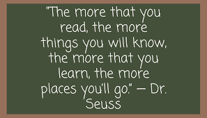
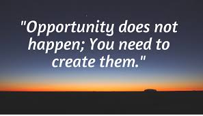
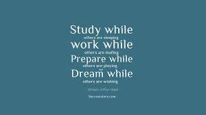
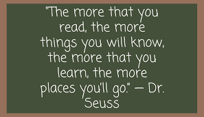
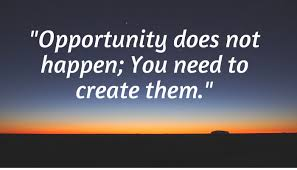
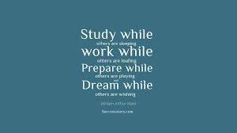

Text
Articles and Guides
Our Articles and Guides section is your go-to resource for insightful and practical content on
mental health and well-being. Here, you'll find expertly crafted articles that cover a wide range of
topics, from stress management techniques and mindfulness practices to strategies for building
emotional resilience. These guides are designed to provide you with actionable advice and support,
helping you navigate life's challenges and maintain a healthy mental state. Whether you're seeking
to understand more about mental health or looking for specific tips to enhance your well-being, our
articles and guides offer valuable insights to empower and uplift you.
PDFs
- PDF 1Student Prevention by WHO
- PDF 2Mental health promotion
by NAMPSP
- PDF 3Youth suicide
prevention
Guide
- PDF 4After a suicide: a toolkit
Guide
- PDF 5Student prevention by
nysed.gov
FAQs
- Q 1:What is the primary mission of Open Arms?
- Ans:The primary mission of Open Arms is to prevent student suicides and promote
mental health awareness within the student community. We aim to provide students with the
resources, guidance, and emotional support they need to navigate the challenges of academic life
and personal growth.
- Q 2:What services does Open Arms offer to students?
- Ans:Open Arms offers a range of services, including confidential counseling,
peer support groups, mental health workshops, and 24/7 helplines. We also provide educational
resources, stress management tools, and access to mental health professionals to ensure that
students receive comprehensive support.
- Q 3:How can students access Open Arms' support services?
- Ans:Students can access our support services by visiting our office, contacting
our helpline, or reaching out via email. We also offer virtual counseling sessions and online
resources through our website, making it easy for students to seek help from anywhere.
- Q 4:What should I do if I notice signs of distress in a friend or classmate?
- Ans:If you notice signs of distress in a friend or classmate, it's important to
offer your support and encourage them to seek help. You can guide them to contact Open Arms for
professional assistance. Additionally, you should inform a trusted adult, such as a teacher or
school counselor, to ensure they receive the appropriate care.
- Q 5:How can I get involved and support the Open Arms initiative?
- Ans:There are several ways to get involved and support Open Arms. You can
volunteer your time, participate in fundraising events, or spread awareness about our mission on
social media. Donations are also greatly appreciated and help us continue providing essential
services to students in need.

 Motivation img 3
 Motivation img 4
 Motivation img 5
 Motivation img 6
Motivation img 3
 Motivation img 4
 Motivation img 5
 Motivation img 6
 Motivation img 7
Motivation img 7